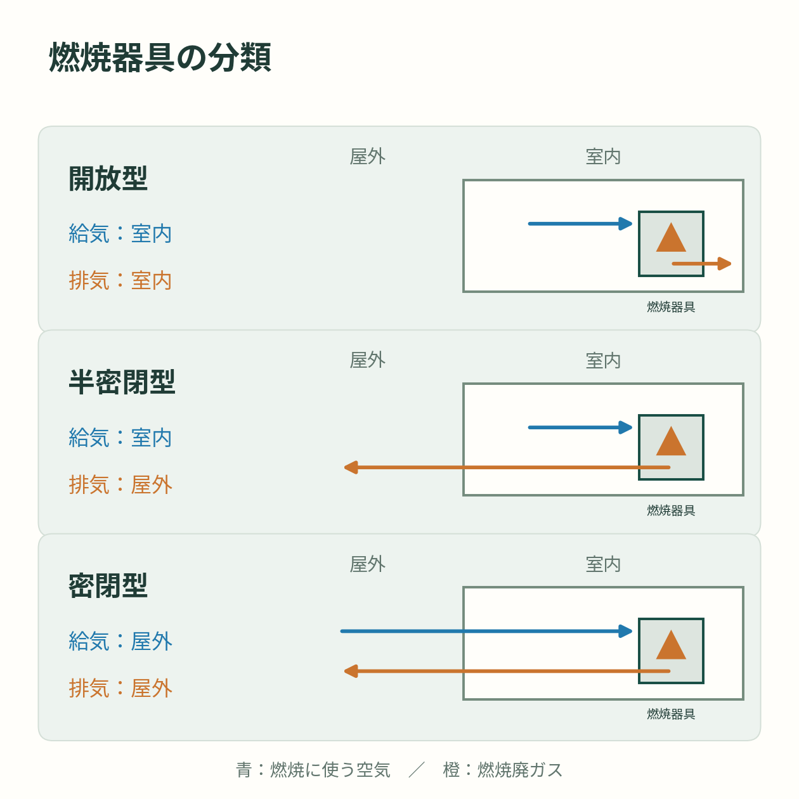
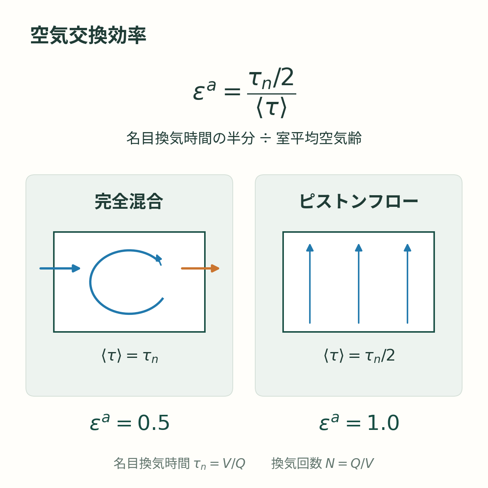
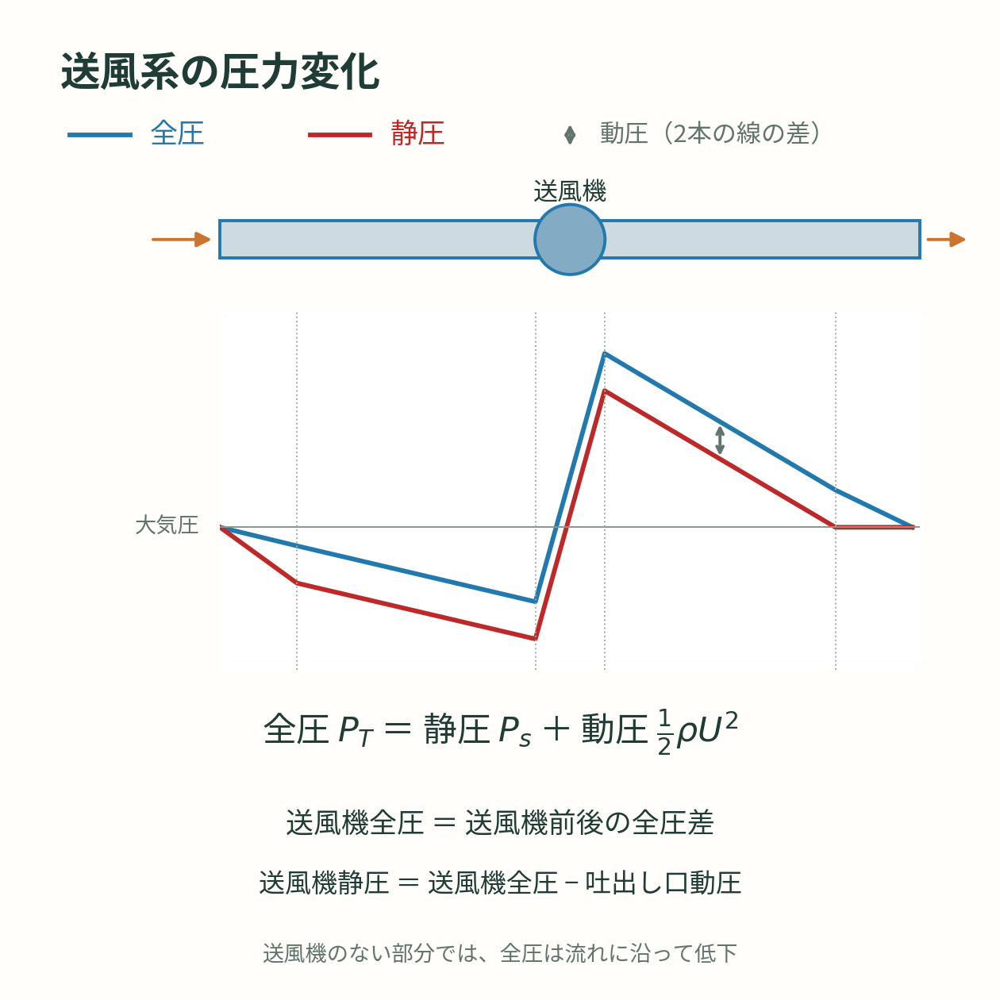
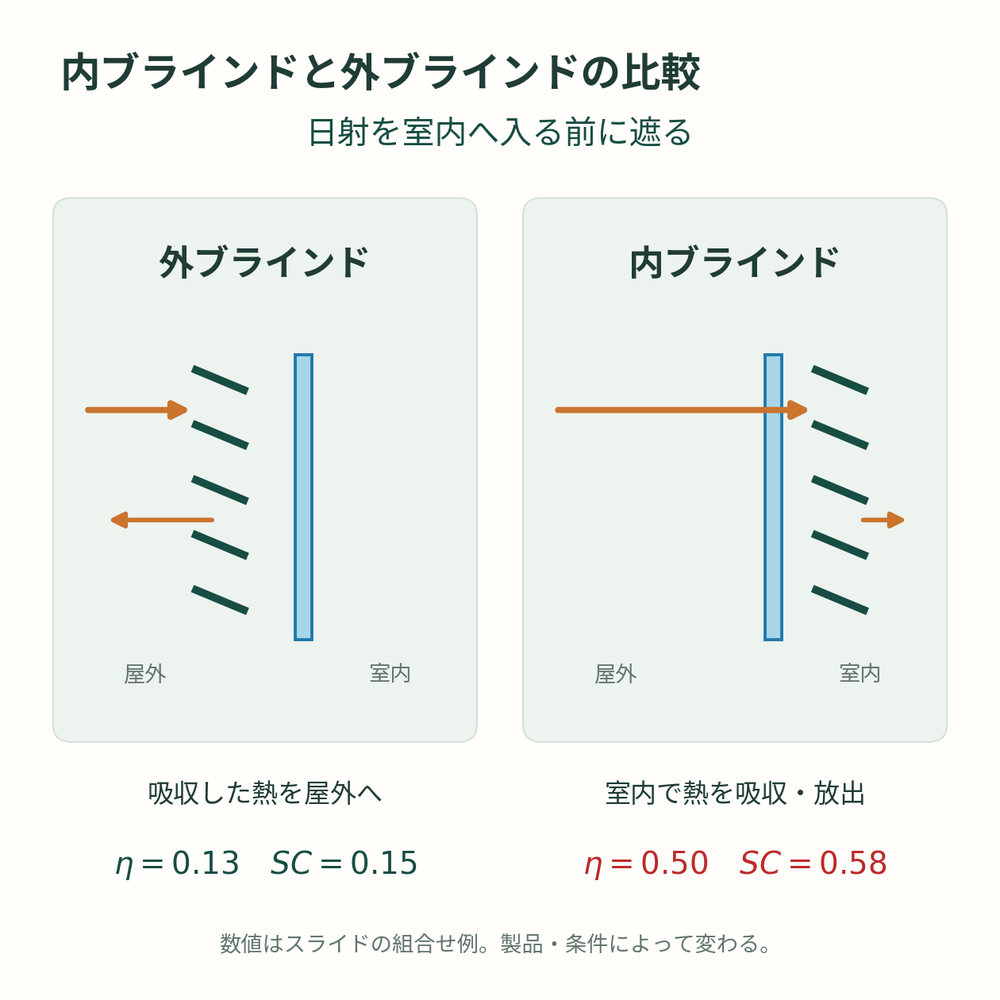
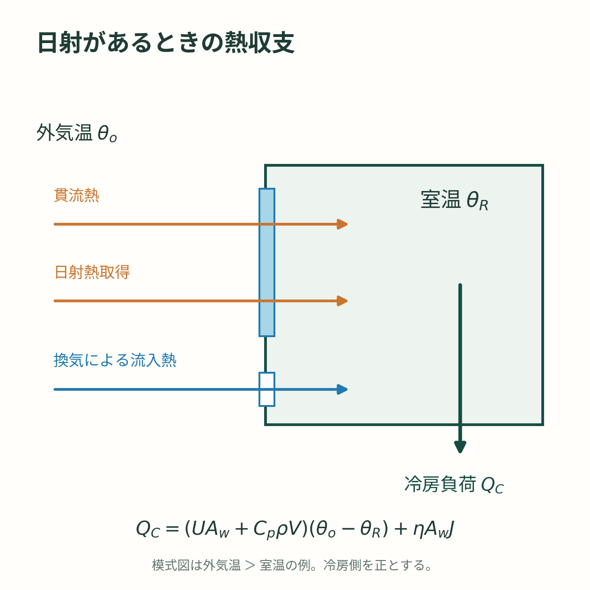

01 / 05
【空気】開放型・半密閉型・密閉型の給気元と排気先は？
- ①重要な答え
- 開放型：室内→室内 半密閉型：室内→屋外 密閉型：屋外→屋外
- ②補足・別の答え
- —
- ③関連事項
- CF・FE＝半密閉型／BF・FF＝密閉型。
- ④例・解説
- ガスコンロは開放型。給気・排気ともに室内。
- ⑤補足説明・出典
- 出題：過去問 p.3・問1(1)。根拠：空気 p.11–14。

画像を拡大FLASH CARDS / 建築熱・空気環境2
空気3枚・熱2枚。スライドの日本語の用語・記号を使った模式図付きです。
①をすべて答えられたら○。③〜⑤は理解と出典の確認に使います。
01 / 05

画像を拡大02 / 05

画像を拡大03 / 05

画像を拡大04 / 05

画像を拡大05 / 05

画像を拡大画像URLも入っているので、画像の手動アップロードは不要です。
ページはPDFの先頭から数えた通し番号です。スライド右下のページ番号とは異なります。
| 内容 | 出題された箇所 | 対応するスライド | 今回 |
|---|---|---|---|
| 燃焼器具の分類 | 過去問PDF p.3 問1(1)・写真 | 空気 p.11–14（第8回） | 今回の1枚目 |
| 燃焼器具の必要換気量 | 過去問PDF p.1 問1(1) | 空気 p.26–34・42–44（第8回） | 次の候補 |
| 換気効率・空気齢と測定法 | 過去問PDF p.1・3 問1(2) | 空気 p.142・158–171・182–192・198（第11回） | 今回の2枚目は定義 |
| CO₂・粉じん濃度、フィルタ捕集率 | 過去問PDF p.1・4 問2(1) | 空気 p.73–75・79–80・89–92（第9回） | 次の候補 |
| 非定常濃度・濃度減衰による換気測定 | 過去問PDF p.1・4 問2(2) | 空気 p.100–110・120–127（第10回） | 次の候補 |
| 噴流の距離減衰 | 過去問PDF p.1 問1(3)・写真 | 空気 p.277–282（第13回） | 次の候補 |
| 各種吹出し口の特性 | 過去問PDF p.3 問1(3)・写真 | 空気 p.287–295（第13回） | 次の候補 |
| ダクトの静圧・動圧・全圧、送風機の圧力 | 過去問PDF p.3 問1(4)・写真 | 空気 p.211–215・237–238・243（第12回） | 今回の3枚目は関係式 |
| 庇などの日射制御装置の光・熱的効果 | 過去問PDF p.2・5 問3・写真 | 熱 p.45・57・59・61–62「日射を考慮した熱負荷・室温計算」 | 今回の4枚目は外・内ブラインドの比較 |
| 日射を含む熱負荷と無負荷帯のグラフ | 過去問PDF p.2・5 問4・写真 | 熱 p.69「日射があるときの熱収支式」（スライド番号28） | 今回の5枚目は熱収支式 |
Q_C＝46(θ_o−θ_R)＋200 [W]。Q_C＝0より自然室温は θ_R＝θ_o＋200/46 ≒ θ_o＋4.35℃。
外気温θ_o＜17.65℃：Q_C＝46θ_o−812（暖房）。17.65〜22.65℃：Q_C＝0。θ_o＞22.65℃：Q_C＝46θ_o−1042（冷房）。
用語・式は授業スライドに揃え、気流・圧力・日射の模式図の意味を確認しました。文字と矢印・曲線は領域を分けて配置しています。